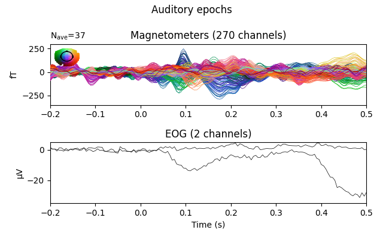
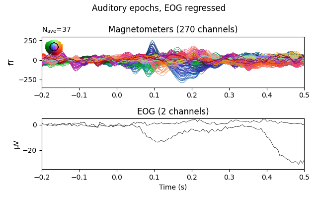
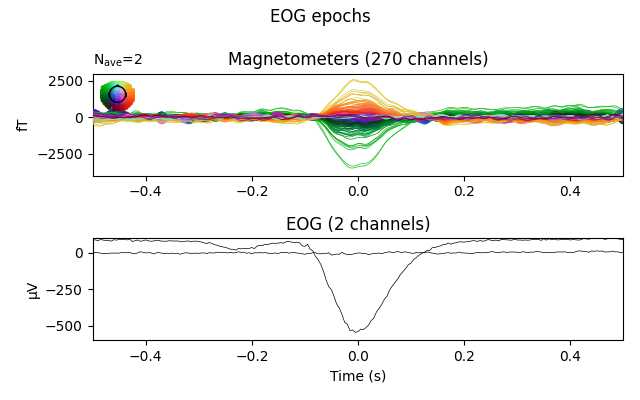
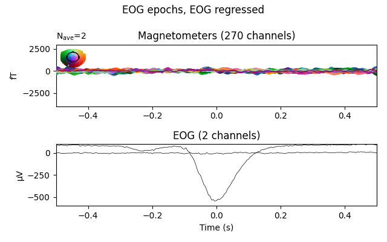
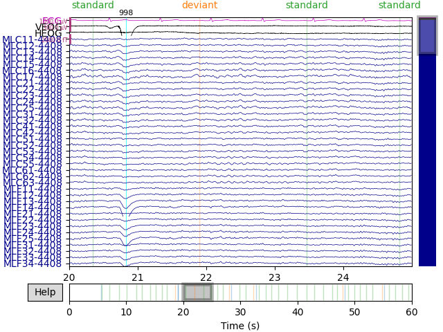

Note
Click here to download the full example code
Repairing artifacts with regression¶
This tutorial covers removal of artifacts using regression as in Gratton et al. (1983) 1.
Page contents
Generally speaking, artifacts that result in time waveforms on the sensors that are accurately reflected by some reference signal can be removed by regression. Blink artifacts captured by bipolar EOG channels serve as a good example of this, so we will demonstrate this here.
Although ECG signals are well captured by bipolar ECG electrodes, regression-based removal of ECG artifacts usually does not work very well. This is likely because the heart acts like a rotating dipole, and therefore the ECG channel time waveform recorded from the ECG electrode sites does not reflect the same temporal dynamics that manifest at each MEG channel (obtained by sampling some component of the related magnetic vector field). Other approaches like ICA or SSP will likely work better for ECG.
Prepare the data¶
We begin as always by importing the necessary Python modules and loading some data. In this case we use data from Brainstorm because it has some clear, large blink artifacts. We then crop it to 60 seconds, set some channel information, then process the auditory evoked data.
Note that there are other corrections that are useful for this dataset that we will not apply here (see Brainstorm auditory tutorial dataset for more information).
import os.path as op
import numpy as np
import mne
data_path = mne.datasets.brainstorm.bst_auditory.data_path()
raw_fname = op.join(data_path, 'MEG', 'bst_auditory', 'S01_AEF_20131218_01.ds')
raw = mne.io.read_raw_ctf(raw_fname).crop(0, 60)
raw.set_channel_types({'HEOG': 'eog', 'VEOG': 'eog', 'ECG': 'ecg'})
raw.pick_types(meg=True, stim=True, misc=True,
eog=True, ecg=True, ref_meg=False).load_data()
raw.info['bads'] = ['MLO52-4408', 'MRT51-4408', 'MLO42-4408', 'MLO43-4408']
raw.filter(None, 40)
decim = 12 # 2400 -> 200 Hz sample rate for epochs
Out:
ds directory : /home/circleci/mne_data/MNE-brainstorm-data/bst_auditory/MEG/bst_auditory/S01_AEF_20131218_01.ds
res4 data read.
hc data read.
Separate EEG position data file read.
Quaternion matching (desired vs. transformed):
2.51 74.26 0.00 mm <-> 2.51 74.26 0.00 mm (orig : -56.69 50.20 -264.38 mm) diff = 0.000 mm
-2.51 -74.26 0.00 mm <-> -2.51 -74.26 0.00 mm (orig : 50.89 -52.31 -265.88 mm) diff = 0.000 mm
108.63 0.00 0.00 mm <-> 108.63 0.00 -0.00 mm (orig : 67.41 77.68 -239.53 mm) diff = 0.000 mm
Coordinate transformations established.
Reading digitizer points from ['/home/circleci/mne_data/MNE-brainstorm-data/bst_auditory/MEG/bst_auditory/S01_AEF_20131218_01.ds/S01_20131218_01.pos']...
Polhemus data for 3 HPI coils added
Device coordinate locations for 3 HPI coils added
5 extra points added to Polhemus data.
Measurement info composed.
Finding samples for /home/circleci/mne_data/MNE-brainstorm-data/bst_auditory/MEG/bst_auditory/S01_AEF_20131218_01.ds/S01_AEF_20131218_01.meg4:
System clock channel is available, checking which samples are valid.
360 x 2400 = 864000 samples from 340 chs
Current compensation grade : 3
Removing 5 compensators from info because not all compensation channels were picked.
Reading 0 ... 144000 = 0.000 ... 60.000 secs...
Filtering raw data in 1 contiguous segment
Setting up low-pass filter at 40 Hz
FIR filter parameters
---------------------
Designing a one-pass, zero-phase, non-causal lowpass filter:
- Windowed time-domain design (firwin) method
- Hamming window with 0.0194 passband ripple and 53 dB stopband attenuation
- Upper passband edge: 40.00 Hz
- Upper transition bandwidth: 10.00 Hz (-6 dB cutoff frequency: 45.00 Hz)
- Filter length: 793 samples (0.330 sec)
For this dataset and example we’ll use just event type 1 (only the “standard” trials) for simplicity. Event timing is adjusted by comparing the trigger times on detected sound onsets on channel UADC001-4408.
events = mne.find_events(raw, stim_channel='UPPT001')
sound_data = raw[raw.ch_names.index('UADC001-4408')][0][0]
onsets = np.where(np.abs(sound_data) > 2. * np.std(sound_data))[0]
min_diff = int(0.5 * raw.info['sfreq'])
diffs = np.concatenate([[min_diff + 1], np.diff(onsets)])
onsets = onsets[diffs > min_diff]
assert len(onsets) == len(events)
events[:, 0] = onsets
epochs = mne.Epochs(raw, events, event_id=1, decim=decim, preload=True)
Out:
43 events found
Event IDs: [1 2]
Not setting metadata
Not setting metadata
37 matching events found
Setting baseline interval to [-0.2, 0.0] sec
Applying baseline correction (mode: mean)
0 projection items activated
Loading data for 37 events and 1681 original time points ...
0 bad epochs dropped
Compute and apply EOG regression¶
Next we’ll compare the Evoked data (average across epochs) before and
after we regress out the EOG signal. We do this by first estimating the
regression coefficients on epoch data with the evoked response subtracted
out. As long as the EOG artifacts are in the epochs, then the algorithm
should be able to estimate regression coefficients. The EOG artifacts do not
need to be time-locked to the stimulus/epoch event timing of the epochs.
# do regression
_, betas = mne.preprocessing.regress_artifact(epochs.copy().subtract_evoked())
Out:
Subtracting Evoked from Epochs
The following channels are not included in the subtraction: HLC0021-4408, HLC0036-4408, UADC001-4408, UTRG001, HLC0032-4408, HLC0034-4408, HLC0015-4408, HADC003-4408, SCLK01-177, HLC0016-4408, HLC0025-4408, HLC0017-4408, HLC0035-4408, HLC0026-4408, VEOG, HLC0031-4408, HLC0023-4408, UPPT001, HDAC002-4408, HLC0024-4408, HLC0013-4408, HDAC001-4408, ECG, HLC0028-4408, HADC002-4408, UDIO001, HLC0012-4408, HLC0018-4408, HLC0037-4408, HDAC003-4408, HLC0027-4408, HLC0033-4408, HADC001-4408, HLC0038-4408, HLC0011-4408, HLC0022-4408, HLC0014-4408, HEOG
[done]
We then use those coefficients to remove the EOG signal from the original data:
epochs_clean, _ = mne.preprocessing.regress_artifact(epochs, betas=betas)
Visualize the effect on auditory epochs¶
Now we can plot the auditory evoked response before and after regression:
# get ready to plot
plot_picks = ['meg', 'eog']
evo_kwargs = dict(picks=plot_picks, spatial_colors=True,
verbose='error') # ignore warnings about spatial colors
evo_kwargs['ylim'] = dict(mag=[-350, 300], eog=[-35, 5])
# plot original data (averaged across epochs)
fig = epochs.average(picks=plot_picks).plot(**evo_kwargs)
fig.suptitle('Auditory epochs')
mne.viz.tight_layout()
# plot regressed data
fig = epochs_clean.average(picks=plot_picks).plot(**evo_kwargs)
fig.suptitle('Auditory epochs, EOG regressed')
mne.viz.tight_layout()
# clean up
del epochs, epochs_clean
- 
- 
The effect is subtle in these evoked data, but you can see that a bump toward the end of the window has had its amplitude decreased.
Visualize the effect on EOG epochs¶
The effect is clearer if we create epochs around (autodetected) blink events, and plot the average blink artifact before and after the regression based on the same regression coefficients we computed earlier. If the resulting blink evoked data are reduced to near zero, it helps validate that the regression efficiently removes blink artifacts.
# extract epochs around each blink
evo_kwargs['ylim'].update(mag=[-4000, 3000], eog=[-600, 100])
eog_epochs = mne.preprocessing.create_eog_epochs(raw, decim=decim)
eog_epochs.apply_baseline((None, None))
# regress, using the `betas` we already found above
eog_epochs_clean, _ = mne.preprocessing.regress_artifact(eog_epochs,
betas=betas)
# plot original blink epochs
fig = eog_epochs.average(picks=plot_picks).plot(**evo_kwargs)
fig.suptitle('EOG epochs')
mne.viz.tight_layout()
# plot regressed blink epochs
fig = eog_epochs_clean.average(picks=plot_picks).plot(**evo_kwargs)
fig.suptitle('EOG epochs, EOG regressed')
mne.viz.tight_layout()
- 
- 
Out:
EOG channel index for this subject is: [279 280]
Filtering the data to remove DC offset to help distinguish blinks from saccades
Setting up band-pass filter from 1 - 10 Hz
FIR filter parameters
---------------------
Designing a two-pass forward and reverse, zero-phase, non-causal bandpass filter:
- Windowed frequency-domain design (firwin2) method
- Hann window
- Lower passband edge: 1.00
- Lower transition bandwidth: 0.50 Hz (-12 dB cutoff frequency: 0.75 Hz)
- Upper passband edge: 10.00 Hz
- Upper transition bandwidth: 0.50 Hz (-12 dB cutoff frequency: 10.25 Hz)
- Filter length: 24000 samples (10.000 sec)
Now detecting blinks and generating corresponding events
Found 2 significant peaks
Number of EOG events detected : 2
Not setting metadata
Not setting metadata
2 matching events found
No baseline correction applied
Loading data for 2 events and 2401 original time points ...
0 bad epochs dropped
Applying baseline correction (mode: mean)
Visualize the effect on raw data¶
We can also apply the regression directly to the raw data. To do this following the Gratton method requires first computing the regression weights from epoched data with the evoked response subtracted out (as we did above). It is possible to instead compute regression weights directly from the raw data, but this could bias the evoked response more than computing the weights from data with the evoked response removed.
# get ready to plot
order = np.concatenate([ # plotting order: EOG+ECG first, then MEG
mne.pick_types(raw.info, meg=False, eog=True, ecg=True),
mne.pick_types(raw.info, meg=True)])
raw_kwargs = dict(events=eog_epochs.events, order=order, start=20, duration=5,
n_channels=40)
# plot original data
raw.plot(**raw_kwargs)
# regress (using betas computed above) & plot
raw_clean, _ = mne.preprocessing.regress_artifact(raw, betas=betas)
raw_clean.plot(**raw_kwargs)
- 
References¶
- 1
Gabriele Gratton, Michael G. H Coles, and Emanuel Donchin. A new method for off-line removal of ocular artifact. Electroencephalography and Clinical Neurophysiology, 55(4):468–484, April 1983. doi:10.1016/0013-4694(83)90135-9.
Total running time of the script: ( 0 minutes 18.650 seconds)
Estimated memory usage: 729 MB